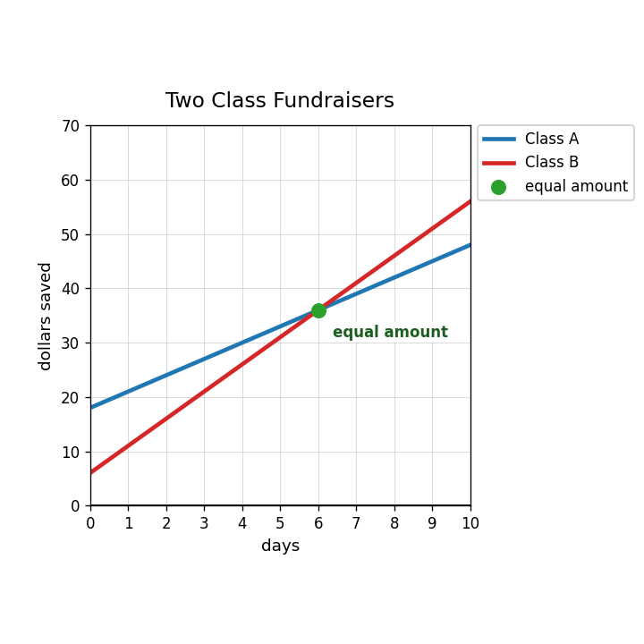
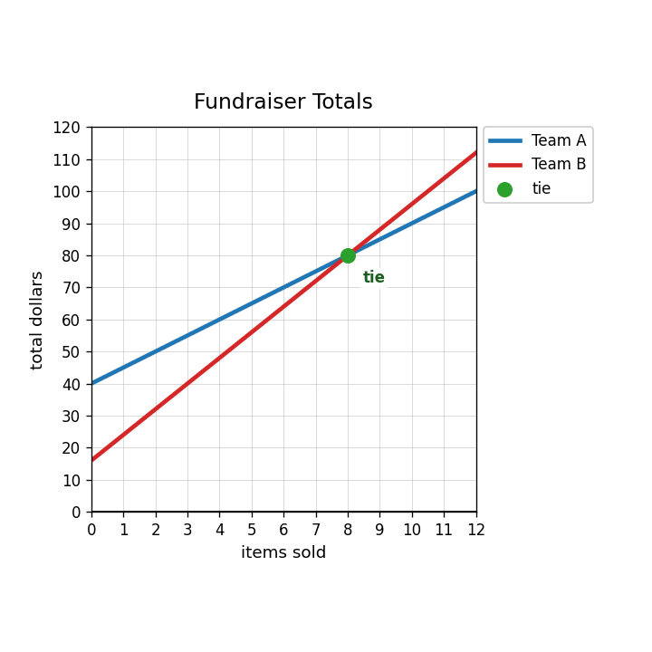

A class sells two types of snacks. Chips cost 2 dollars and granola bars cost 3 dollars. Define variables for the number of each snack sold.
The class sold 40 snacks total and collected 95 dollars. Write a system to model the number of chips and granola bars sold.
Solve the system from the snack situation and interpret the solution.
Use the graph to interpret the solution point in context.

A system solution gives $x=-3$ in a ticket-sales problem. Explain why that answer is not reasonable in context.
A student models 12 total items with $8x+4y=12$. What might be wrong with the model? Write a better total-items equation.
Create a system for two plans: Plan A starts at 40 and adds 5 each step. Plan B starts at 16 and adds 8 each step.

The solution to a system is $(8,80)$. In a fundraising comparison, what could the 8 and 80 mean?